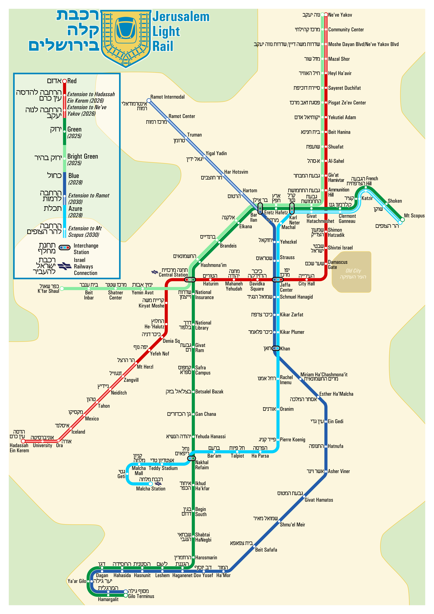

Maps
Jerusalem (JNet)

In 2021 I was part of a team bidding on the operations and maintenance of the new Jerusalem light rail blue line--which, confusingly, is actually 2-3 different routes, depending on the ultimate extent of construction and the city's plans. I couldn't find a useful map, as the city only had meagerly-labeled, separate diagrams for the Green and Blue lines. So I drew up my own. I tried to make it bi-lingual, which mean fitting all the labels to be readable in both Hebrew and English was a challenge. Certainly it could be done more neatly with just one language.
Denver (RTD)
I expanded my Denver map to include the wider region (though not all the way up to Boulder), sorting lines by frequency. I originally used my previous downtown map as an inset, but re-did it to match the frequency-based design of the rest of the map. It's pretty large--meant to be printed at 48"x36" and installed in bus shelters or at rail stations.
Colorado (Bustang)
 After getting a handle on (Downtown) Denver, I wanted to see if there was a way to get out and explore the rest of the state without driving. CDOT runs the Bustang and Outrider services, but there's only an interactive google map showing the full network. The state puts its typographical style online, so I tried my best to incorporate it, and Colorado's square geography adapts to a diagram pretty easily. This map was current as of about April 2021, but is out of date now that additional services have been added.
After getting a handle on (Downtown) Denver, I wanted to see if there was a way to get out and explore the rest of the state without driving. CDOT runs the Bustang and Outrider services, but there's only an interactive google map showing the full network. The state puts its typographical style online, so I tried my best to incorporate it, and Colorado's square geography adapts to a diagram pretty easily. This map was current as of about April 2021, but is out of date now that additional services have been added.
Denver (RTD)
 As I moved to Denver I tried to figure out where to live, and that meant getting to know RTD's network. The train system has a serviceable map, but there is no static bus network map. You can find individual routes or a dynamic map viewer, but the latter is near useless in the downtown area where lines turn in every direction. As much an exercise to get to know the system, I put together this downtown bus map. For clarity I organized the routes by whether they stop at X, Y, or Z stops along 15th and 17th Streets. This map has some strange-seeming gaps because I designed it to nicely include the MetroRide and Light Rail lines that are suspended during the pandemic.
As I moved to Denver I tried to figure out where to live, and that meant getting to know RTD's network. The train system has a serviceable map, but there is no static bus network map. You can find individual routes or a dynamic map viewer, but the latter is near useless in the downtown area where lines turn in every direction. As much an exercise to get to know the system, I put together this downtown bus map. For clarity I organized the routes by whether they stop at X, Y, or Z stops along 15th and 17th Streets. This map has some strange-seeming gaps because I designed it to nicely include the MetroRide and Light Rail lines that are suspended during the pandemic.
Auckland (AT)
 In 2019, I got to work with the fine folks at Auckland Transport on the expected fleet impacts from the 2024 opening of the City Rail Link. The current strip map can't easily be modified to include the CRL tunnel section, and the most prominent public-facing documents at this early stage aren't clear about the exact route structure. So I started from scratch and made a diagram that's I could also vary to help walk through alternatives in our report. I wanted to keep it simple (hence no legend or geographical cues to Auckland's locaiton on an isthmus) while maintaining useful details like which lines are peak-only, operate in only one direction, etc.
In 2019, I got to work with the fine folks at Auckland Transport on the expected fleet impacts from the 2024 opening of the City Rail Link. The current strip map can't easily be modified to include the CRL tunnel section, and the most prominent public-facing documents at this early stage aren't clear about the exact route structure. So I started from scratch and made a diagram that's I could also vary to help walk through alternatives in our report. I wanted to keep it simple (hence no legend or geographical cues to Auckland's locaiton on an isthmus) while maintaining useful details like which lines are peak-only, operate in only one direction, etc.
San Diego (MTS)
 When I lived in San Diego, I was not yet enlightened. Despite living in Gaslamp and working at SWRMC (next to the Pacific Fleet stop), I drove to work every day—Uncle Sam was willing to give me a car to use seven days a week and free parking right outside my office, but only a transit pass for commuting ¯\_(ツ)_/¯. The existing MTS map features lots of awkward angles and no geographical context, and with the Mid-Coast Trolley extension opening soon(ish) they're going to need a new map anyway. I tried to move away from the current angular setup in favor of more languid curves, and added in a simplified coastline.
When I lived in San Diego, I was not yet enlightened. Despite living in Gaslamp and working at SWRMC (next to the Pacific Fleet stop), I drove to work every day—Uncle Sam was willing to give me a car to use seven days a week and free parking right outside my office, but only a transit pass for commuting ¯\_(ツ)_/¯. The existing MTS map features lots of awkward angles and no geographical context, and with the Mid-Coast Trolley extension opening soon(ish) they're going to need a new map anyway. I tried to move away from the current angular setup in favor of more languid curves, and added in a simplified coastline.
San Jose (VTA)
 While working on potential operating plans for the new east-west Tasman line, I needed some graphics to show various potential stopping patterns. Rather than try to re-shape the current map to show service along Tasman, I ended up building my own from scratch, and then expanding it to include the entire system. If given free reign I'd probably make more changes, but I needed to keep things as similar as possible to the existing diagram.
While working on potential operating plans for the new east-west Tasman line, I needed some graphics to show various potential stopping patterns. Rather than try to re-shape the current map to show service along Tasman, I ended up building my own from scratch, and then expanding it to include the entire system. If given free reign I'd probably make more changes, but I needed to keep things as similar as possible to the existing diagram.
Metroplex Rail
 When I started my work on the DART Cotton Belt Line, I needed to familiarize myself with Dallas transit. Neither the DART Light Rail diagram nor the Cotton Belt-specific maps didn't show the connections to the rest of the Metroplex. So I sketched this out and stuck it in my notebook for reference.
When I started my work on the DART Cotton Belt Line, I needed to familiarize myself with Dallas transit. Neither the DART Light Rail diagram nor the Cotton Belt-specific maps didn't show the connections to the rest of the Metroplex. So I sketched this out and stuck it in my notebook for reference.
New Orleans (NORTA)
 Confession: I made this map years before I ever visited New Orleans. But in doing some research for the 2019 LRT Conference, I saw that NORTA's streetcar maps were either out of date (still showing the Rampart-St Claude line as UPT-Loyola) or were separated into pieces (i.e. a separate line diagram for the St. Charles Line from the rest of the system). So I made a new one.
Confession: I made this map years before I ever visited New Orleans. But in doing some research for the 2019 LRT Conference, I saw that NORTA's streetcar maps were either out of date (still showing the Rampart-St Claude line as UPT-Loyola) or were separated into pieces (i.e. a separate line diagram for the St. Charles Line from the rest of the system). So I made a new one.